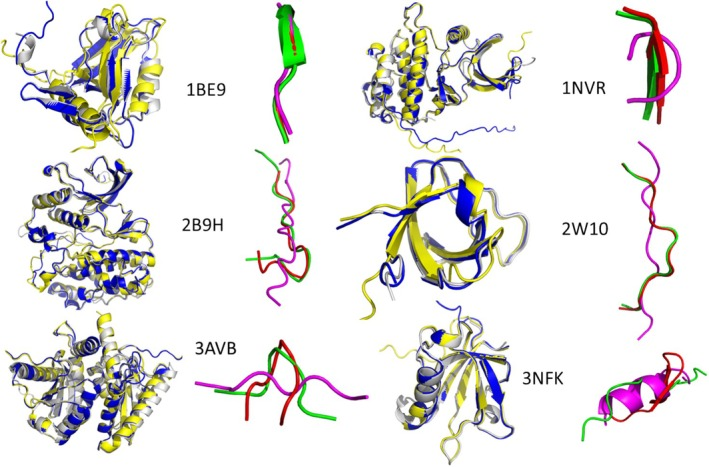

My Projects
Interactive Paint App
A drawing application built using vanilla JavaScript, HTML, and CSS.
- Dynamic Grid: Change the canvas size on the fly.
- Color Tools: Pick any color, or use the vibrant rainbow mode.
- Special Brushes: Try the gradient brush for shading effects or the eraser to correct mistakes.
- Pure JS: No external libraries were used for the core drawing functionality.
Paint!
Research at Pitt
I co-authored a study that introduces a novel AI-assisted protocol for protein-peptide binding without requiring any pre-existing experimental structural information. Our method uses AlphaFold 2 for structure generation, ZDOCK for docking, and the ANI-2x machine learning potential for refinement and reranking to identify the most accurate binding pose. When tested on 62 challenging systems, our approach successfully predicted the correct structure in 34% of cases for the top-ranked pose and 45% of cases when considering the top three poses. You can read more here.

Research at Pitt: The Sequel
This past summer, I lead a research project analyzing AlphaFold3's capability as a standalone drug development tool. Using experimental mutation data for 20 unique complexes, we were able to draw a statistically significant correlation between AlphaFold's confidence scores (pLDDT, PAE) and ΔΔG (change in binding affinity). The paper is currently being written.